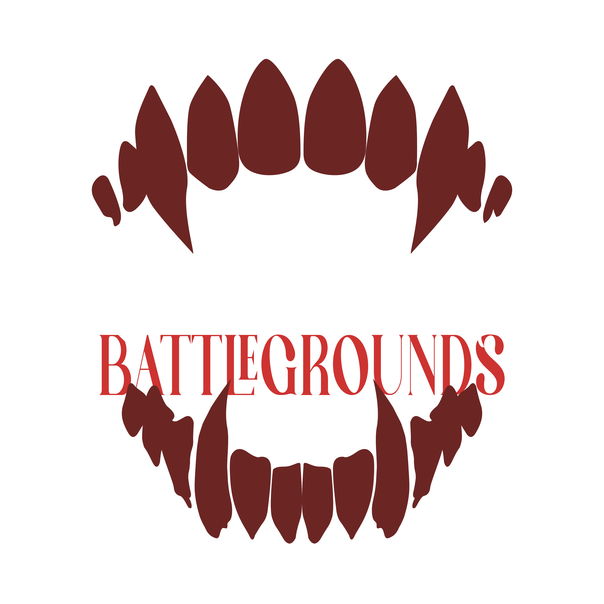
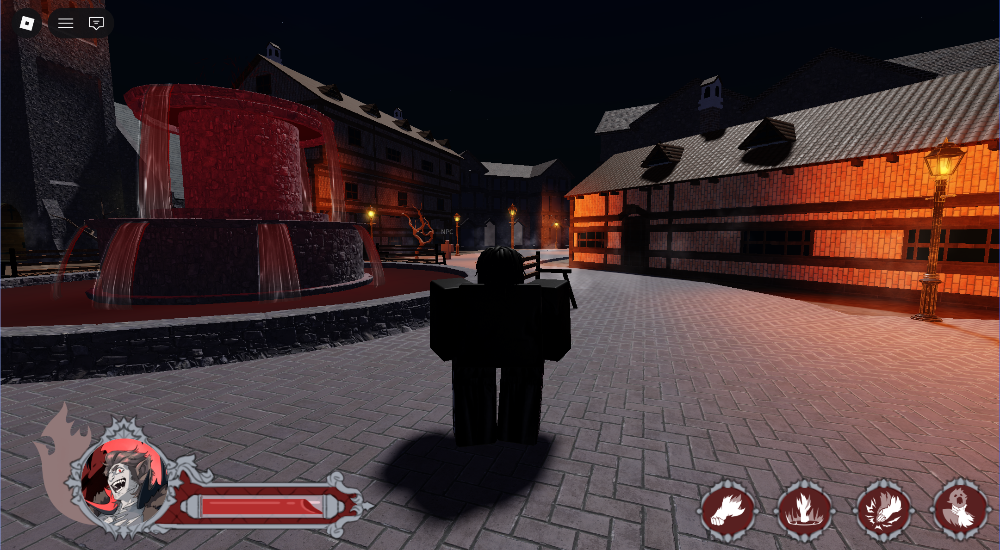

Engine
Roblox (Lua)
My Role
UI/UX, QA Specialist and 3D Animator
Animations Quality AssuranceTools
Figma, After Effects, Bug Sheets
Timeline
In progress
The Mission
In Nocturne Battlegrounds, the challenge was to create a combat-heavy interface that feels responsive and lightweight. My contribution evolved into a dual responsibility: architecting the user journey and ensuring technical excellence through continuous testing.

User Experience Strategy
A minimalist HUD was essential to maintain player immersion during high-intensity 1v1 combat. My focus was on reducing cognitive load by placing vital information where the eye naturally rests.
Visual Hierarchy
Strategic placement of health and passive bars to ensure they are readable without distracting from the action.
Feedback Systems
Designing clear visual cues for ability cooldowns and combat states to keep the player informed at all times.
Quality Assurance & Optimization
I believe that QA is an extension of UX. Finding and documenting bugs is how we protect the player's experience from frustration.
-
Playtesting & Feedback Loops Leading testing sessions with players to gather qualitative data on gameplay feel and UI intuitiveness.
-
Bug Tracking & Documentation Developing detailed bug reports and improvement tables to streamline communication with the programming team.
-
Gameplay Polishing Translating community feedback into actionable design solutions to refine combat mechanics and menu flows.